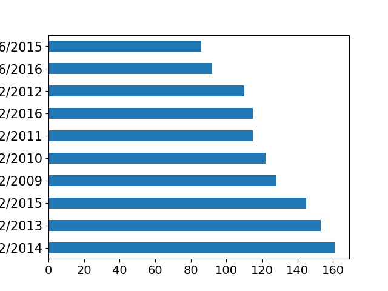
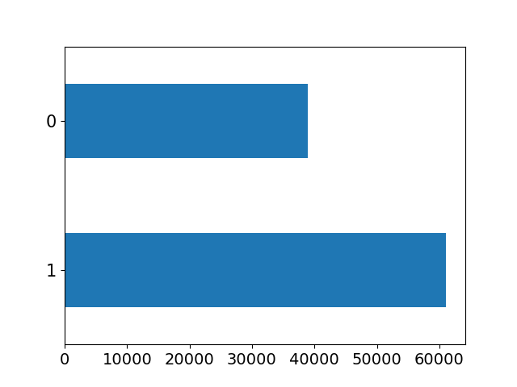
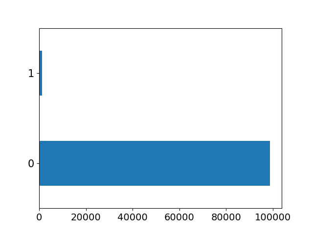

| YearStart | Continuous variable (int64) |  |
Min: 2001 Max: 2016 Mean ± SD: 2013.14 ± 1.78 Median (IQR): 2013.0 (2012.0, 2015.0) |
No missing values |
N=0 |
|---|---|---|---|---|---|
| YearEnd | Categorical variable (int64) |  |
Categorical Variable 10 unique values Up to top 10 values are presented |
No missing values |
Text/Date variable No outliers |
| LocationAbbr | Text or Date |  |
Categorical Variable 55 unique values Up to top 10 values are presented |
No missing values |
Text/Date variable No outliers |
| LocationDesc | Text or Date |  |
Categorical Variable 55 unique values Up to top 10 values are presented |
No missing values |
Text/Date variable No outliers |
| DataSource | Text or Date |  |
Categorical Variable 32 unique values Up to top 10 values are presented |
No missing values |
Text/Date variable No outliers |
| Topic | Text or Date |  | Categorical Variable 17 unique values Up to top 10 values are presented |
No missing values |
Text/Date variable No outliers |
| Question | Text or Date |  |
Categorical Variable 203 unique values Up to top 10 values are presented |
No missing values |
Text/Date variable No outliers |
| Response | Single Variable |  |
Single value No Statistic |
N=440530, 84.8% | Single variable No outlier |
| DataValueUnit | Text or Date |  |
Categorical Variable 14 unique values Up to top 10 values are presented |
N=43672, 8.4% | Text/Date variable No outliers |
| DataValueType | Text or Date |  |
Categorical Variable 19 unique values Up to top 10 values are presented |
No missing values |
Text/Date variable No outliers |
| DataValue | Text or Date |  | Categorical Variable 31896 unique values Up to top 10 values are presented |
N=145154, 27.9% | Text/Date variable No outliers |
| DataValueAlt | Continuous variable (float64) |  |
Min: 0.0 Max: 2600878.0 Mean ± SD: 891.77 ± 18330.71 Median (IQR): 41.0 (18.45, 70.3) |
N=169383, 32.6% | N=0 |
| DataValueFootnoteSymbol | Text or Date |  |
Categorical Variable 19 unique values Up to top 10 values are presented |
N=292400, 56.3% | Text/Date variable No outliers |
| DatavalueFootnote | Text or Date |  |
Categorical Variable 19 unique values Up to top 10 values are presented |
N=292566, 56.3% | Text/Date variable No outliers |
| LowConfidenceLimit | Continuous variable (float64) |  |
Min: 0.2 Max: 1330.66 Mean ± SD: 46.76 ± 77.49 Median (IQR): 30.2 (12.7, 55.4) |
N=208656, 40.1% | N=0 |
| HighConfidenceLimit | Continuous variable (float64) |  |
Min: 0.42 Max: 2088.0 Mean ± SD: 58.99 ± 88.67 Median (IQR): 43.8 (18.9, 70.4) |
N=208656, 40.1% | N=0 |
| StratificationCategory1 | Categorical variable |  | Text/Date variable Up to top 10 values are presented Out of 3 unique values |
No missing values |
Categorical variable No outlier |
| Stratification1 | Text or Date |  |
Categorical Variable 11 unique values Up to top 10 values are presented |
No missing values |
Text/Date variable No outliers |
| StratificationCategory2 | Single Variable |  |
Single value No Statistic |
N=440530, 84.8% | Single variable No outlier |
| Stratification2 | Single Variable |  |
Single value No Statistic |
N=440530, 84.8% | Single variable No outlier |
| StratificationCategory3 | Single Variable |  |
Single value No Statistic |
N=440530, 84.8% | Single variable No outlier |
| Stratification3 | Single Variable |  |
Single value No Statistic |
N=440530, 84.8% | Single variable No outlier |
| GeoLocation | Text or Date |  |
Categorical Variable 54 unique values Up to top 10 values are presented |
N=3603, 0.7% | Text/Date variable No outliers |
| ResponseID | Single Variable |  |
Single value No Statistic |
N=440542, 84.8% | Single variable No outlier |
| LocationID | Continuous variable (int64) |  |
Min: 1 Max: 78 Mean ± SD: 30.99 ± 17.72 Median (IQR): 30.0 (17.0, 45.0) |
No missing values |
N=0 |
| TopicID | Text or Date |  |
Categorical Variable 17 unique values Up to top 10 values are presented |
No missing values |
Text/Date variable No outliers |
| QuestionID | Text or Date |  |
Categorical Variable 203 unique values Up to top 10 values are presented |
No missing values |
Text/Date variable No outliers |
| DataValueTypeID | Text or Date |  |
Categorical Variable 19 unique values Up to top 10 values are presented |
No missing values |
Text/Date variable No outliers |
| StratificationCategoryID1 | Categorical variable |  |
Text/Date variable Up to top 10 values are presented Out of 3 unique values |
No missing values |
Categorical variable No outlier |
| StratificationID1 | Text or Date |  |
Categorical Variable 11 unique values Up to top 10 values are presented |
No missing values |
Text/Date variable No outliers |
| StratificationCategoryID2 | Single Variable |  |
Single value No Statistic |
N=440529, 84.8% | Single variable No outlier |
| StratificationID2 | Single Variable |  |
Single value No Statistic |
N=440529, 84.8% | Single variable No outlier |
| StratificationCategoryID3 | Single Variable |  |
Single value No Statistic |
N=440530, 84.8% | Single variable No outlier |
| StratificationID3 | Single Variable |  |
Single value No Statistic |
N=440530, 84.8% | Single variable No outlier |